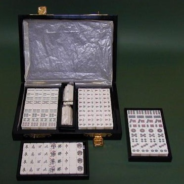
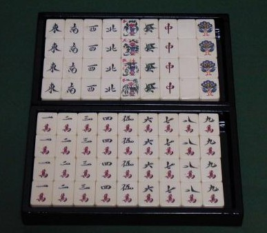

Tile colection 珍奇牌。
（７）象牙新牌
新牌といっても、おおよそ２５年くらい前の牌。まだ象牙は輸入禁止にはなっていなかったが、この頃には手彫りそのものがは珍しくなってきた。ましてや象牙となると、高額なため売れ行の問題もあって新製品はほとんど作られなくなっていた。
この頃、当時勢いのあった（株）かきぬまが売り出したもの。結果的に、日本で製造された最後の象牙牌となった。点棒もサイコロも無垢の象牙で、しっとりして大変感じがいい。
当時、３５万円前後であった記憶だが、そもそも手が出るような状態ではなかったので、はっきり覚えていない。(~0~) σ(-_-)はずいぶん経ってから、ある縁で入手した。
箱は韓国で作らせた象嵌細工、漆塗りの特注品（細工のある箱の表面を撮るのを忘れた・・・）。

材料はケニア産の象牙。彫りは、最後の名人と言われた石川茂氏。１索の鳥が正面を向いているのは石川彫りの特徴（石川氏と並んで名人彫り師と言われた毛利英夫氏の１索は横向き鳥が特徴）。
